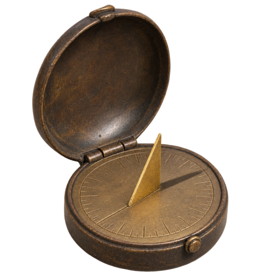
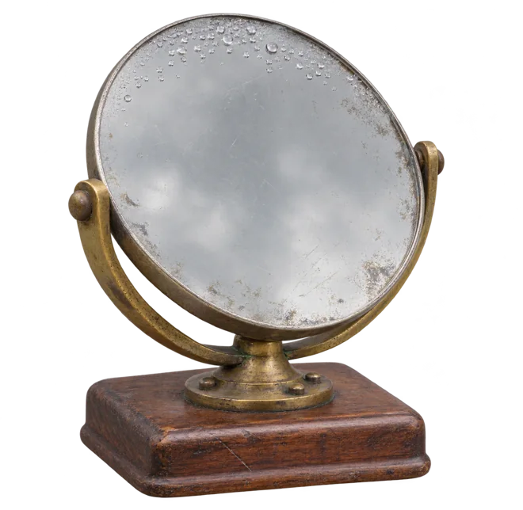
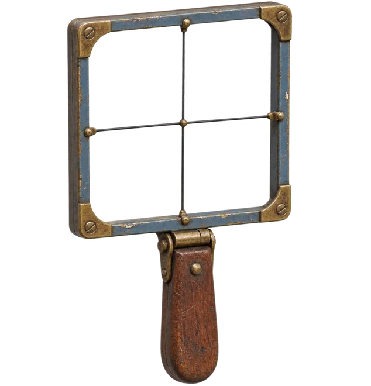
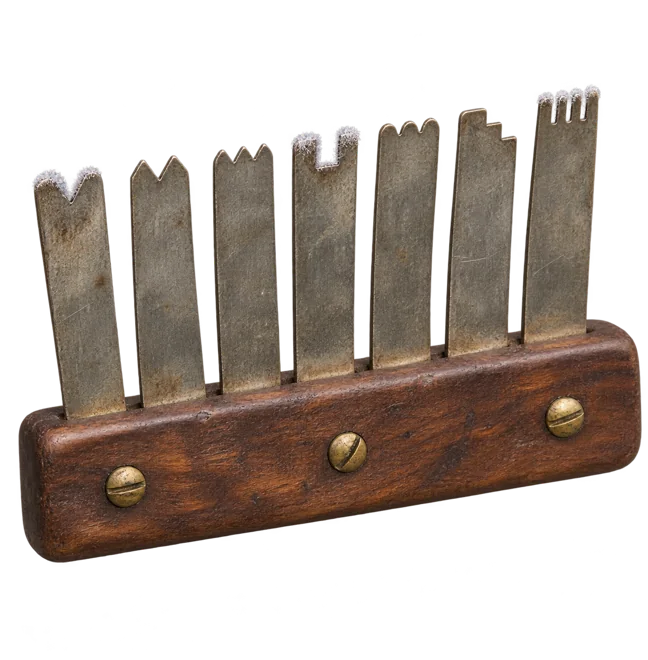

← Cabinet entrance
The collection
Look up an instrument by name, material, or the weather it records.
6 instruments
-
RainfallRain catcherGlass and brass→

-
WindPocket wind counterBrass and walnut→

-
SunlightFolding sundialCast bronze→

-
DewDew mirrorSilver plate and walnut→

-
Cloud driftCloud windowEnamel, brass and wire→

-
FrostFrost combSteel and walnut→

No instruments found
Try a material such as brass, or look across all weather families.